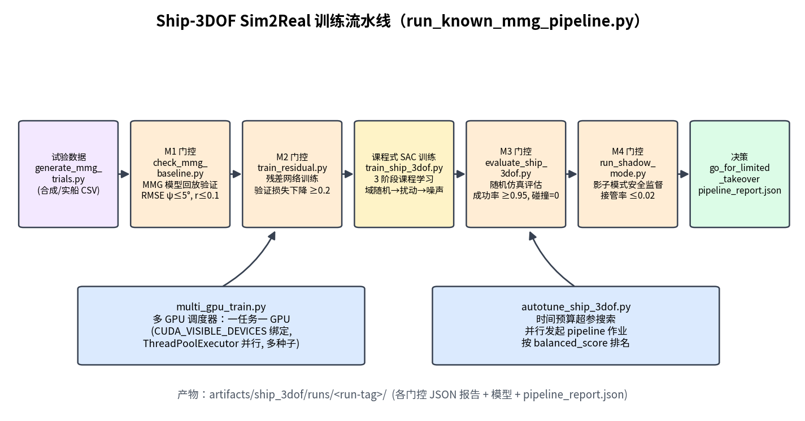
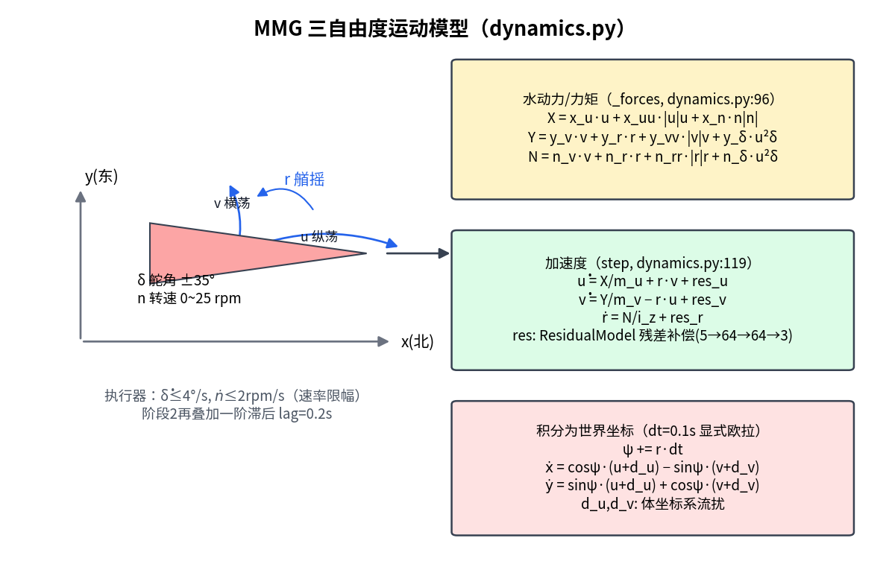
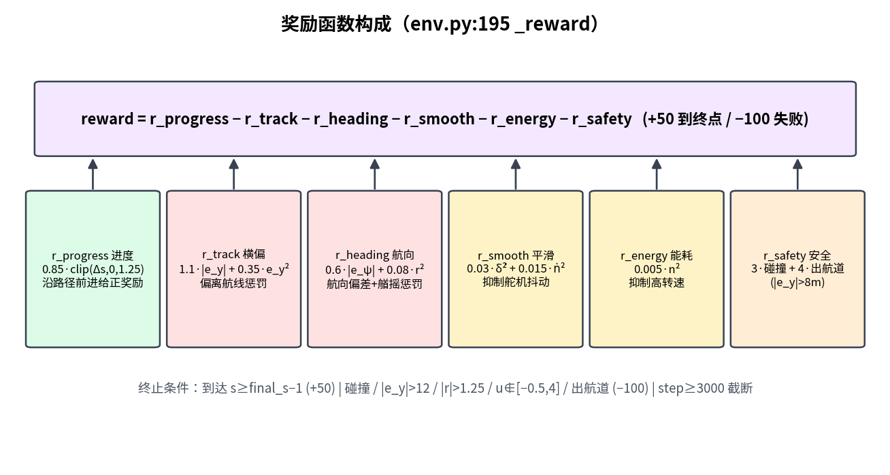
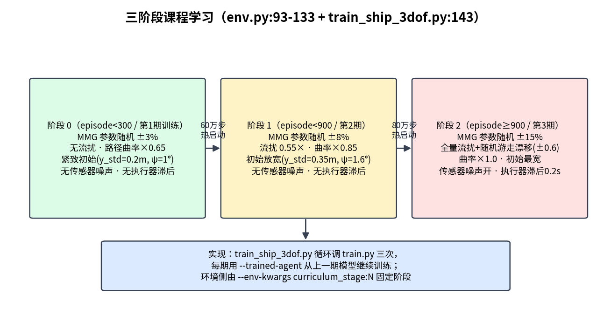
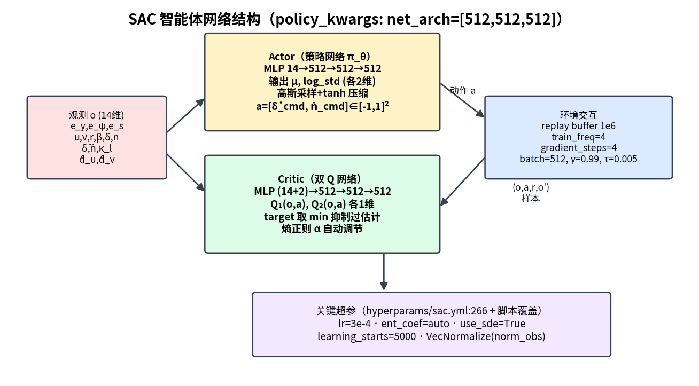
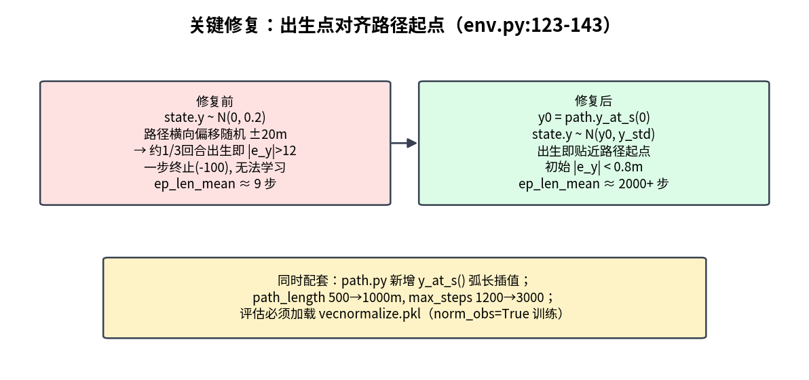
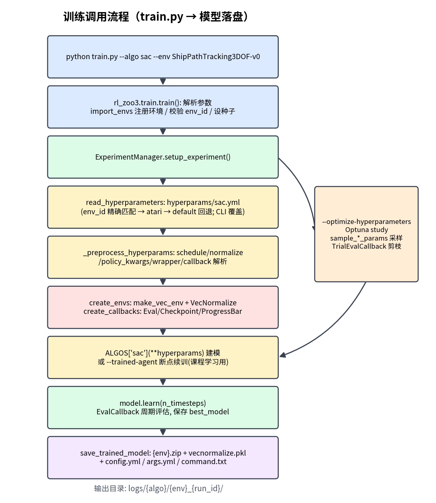
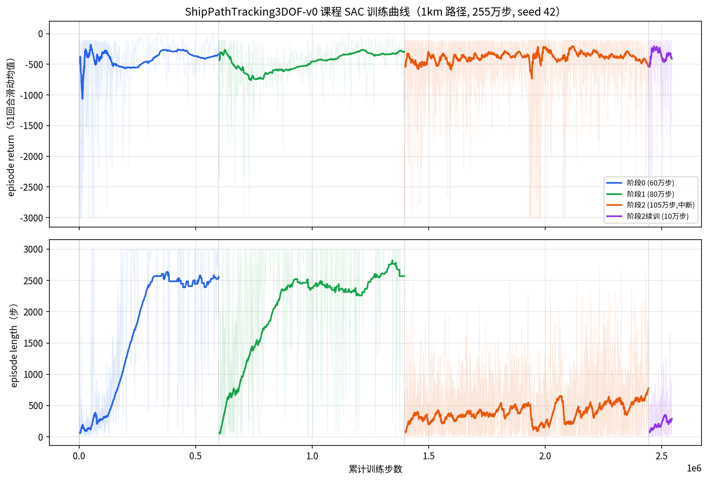
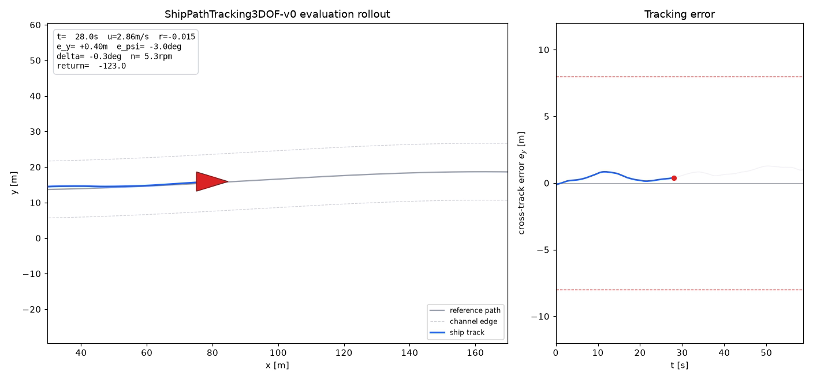
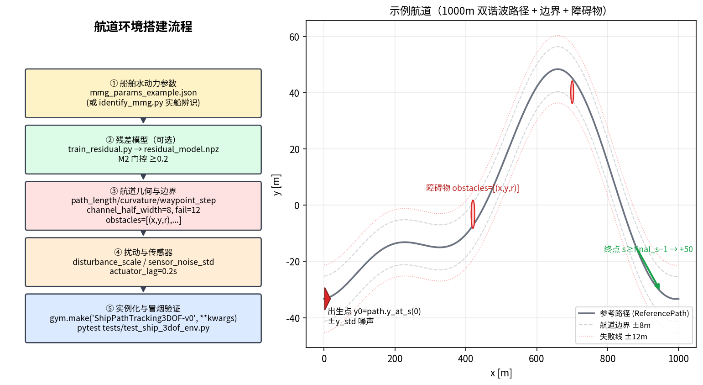

对象：
ShipPathTracking3DOF-v0环境 + SAC 课程训练模型 本文对照源码逐模块说明，所有引用均给出文件与行号，便于查阅 实训基线：1 km 路径、255 万步课程 SAC（seed 42），阶段 2 全难度下横向误差稳定于 ±1.5 m 内
本模型解决船舶在受限航道内的路径跟踪控制问题：智能体每 0.1 s 输出一次舵角速率与主机转速速率指令，驱动一艘三自由度（纵荡/横荡/艏摇）船舶沿一条 1000 m 双谐波参考路径航行，同时满足航道边界、速度包线、舵机/主机物理约束，并抵抗流扰、传感器噪声与水动力参数不确定性。
技术栈：
custom_envs/ship_3dof/），MMG 操纵性模型 +
残差神经网络补偿；ExperimentManager
驱动）；scripts/ship_3dof/run_known_mmg_pipeline.py）。
Box(-1, 1, shape=(2,))，每步（dt=0.1 s）执行：
| 维度 | 物理含义 | 映射关系（env.py:258-259） |
|---|---|---|
a[0] |
舵角速率指令 | dot_delta_cmd = a[0] × 4°/s |
a[1] |
主机转速速率指令 | dot_n_cmd = a[1] × 2.0 rpm/s |
阶段 2
起指令再经一阶滞后（actuator_lag=0.2 s，env.py:261-267），模拟真实舵机/主机响应。
Box(-5, 5, shape=(14,))，原始量除以
DEFAULT_OBS_SCALE（config.py:76-91）后裁剪到 ±5：
| # | 分量 | 含义 | 缩放系数 |
|---|---|---|---|
| 0 | e_y |
横向偏差（相对路径法线） | 12.0 |
| 1 | e_psi |
航向偏差（rad） | π |
| 2 | e_s |
距路径终点的弧长 | 250.0 |
| 3-5 | u, v, r |
纵荡/横荡速度、艏摇角速度 | 4.0 / 2.0 / 1.5 |
| 6 | beta |
漂角 atan2(v, max(u,0.25)) |
1.0 |
| 7-8 | delta, n |
当前舵角（rad）、转速（rpm） | 0.7 / 25.0 |
| 9-10 | dot_delta_prev, dot_n_prev |
上一步实际指令（平滑性依据） | 0.2 / 2.5 |
| 11 | kappa_l |
局部路径曲率 | 0.01 |
| 12-13 | d_u_hat, d_v_hat |
流扰估计（真值 + 估计噪声） | 0.6 / 0.6 |
阶段 2 起 e_y/e_psi/u/v/r
叠加高斯传感器噪声（_sensor_noise, env.py:159-162）。
path_length, config.py:60），最长 3000
步 = 300 s（max_steps, config.py:53）；_build_path, env.py:113-121）；
ShipState（dynamics.py:11-20）：x, y, psi, u, v, r, delta, n
共 8 个。
X = x_u·u + x_uu·|u|·u + x_n·n·|n| # 纵向力：阻力 + 螺旋桨推力
Y = y_v·v + y_r·r + y_vv·|v|·v + y_δ·u²·δ # 横向力：粘性 + 舵力
N = n_v·v + n_r·r + n_rr·|r|·r + n_δ·u²·δ # 艏摇力矩：阻尼 + 舵效14 个水动力系数见
MMGParameters（config.py:8-22），默认值对应一艘小型无人艇量级（m_u=35, m_v=45, i_z=18）。实际项目可通过
identification.py 从试验数据辨识替换。
u̇ = X/m_u + r·v + res_u # 科氏耦合 r·v
v̇ = Y/m_v − r·u + res_v
ṙ = N/i_z + res_r
ψ += r·dt
ẋ = cosψ·(u+d_u) − sinψ·(v+d_v)
ẏ = sinψ·(u+d_u) + cosψ·(v+d_v)显式欧拉积分，dt=0.1 s；(d_u, d_v)
为体坐标系流扰（阶段 2
还会随机游走漂移，env.py:270-273）。执行器约束（dynamics.py:111-114）：舵角
±35°、舵速 ≤4°/s、转速 n∈[0,25]、转速速率 ≤2 rpm/s。
ResidualModel：tanh MLP 5→64→64→3，输入
[u,v,r,delta,n]，输出经
[0.08,0.08,0.05]·tanh(·)
限幅后叠加到三个加速度通道，用于补偿 MMG
多项式之外的未建模动力学。权重由
scripts/ship_3dof/train_residual.py 在试验数据上训练，经 M2
门控（验证损失下降
≥0.2）后才会被加载（residual_model_path，env.py:41-43）。
每回合按阶段幅度对全部 14 个 MMG
系数做乘性随机化：param × U(1±amplitude)（阶段 0/1/2 分别
±3%/±8%/±15%），这是 sim2real 鲁棒性的主要手段之一。
ReferencePath（path.py:22-53）：弧长
s∈[0,1000]、步长 1
m；横向偏移为两个正弦谐波叠加：y = 12κL·sin(2πs/L+φ₁) + 6κL·sin(4πs/L+φ₂)，相位
φ 随机，κ≈0.0025 并按阶段缩放（×0.65/0.85/1.0）；closest_point(x, y)（path.py:59-74）：带
_last_closest 缓存的窗口搜索，避免每步全路径扫描；signed_cross_track_error（path.py:76-80）：沿路径法线的有符号横向误差
e_y；y_at_s(s)：弧长插值取横向位置（出生点对齐用，见
§8）。
reward = r_progress − r_track − r_heading − r_smooth − r_energy − r_safety| 项 | 表达式（env.py:203-210） | 设计意图 |
|---|---|---|
| 进度 | 0.85 · clip(Δs, 0, 1.25) |
每步沿路径前进的弧长给正奖励（上限防刷分） |
| 横偏 | 1.1·|e_y| + 0.35·e_y² |
偏离航线的线性+二次惩罚 |
| 航向 | 0.6·|e_psi| + 0.08·r² |
航向误差与艏摇阻尼 |
| 平滑 | 0.03·δ̇² + 0.015·ṅ² |
抑制舵机/主机抖动（保护执行器） |
| 能耗 | 0.005·n² |
抑制不必要的高转速 |
| 安全 | 3·碰撞 + 4·(|e_y|>8) |
硬约束的软惩罚（出半航道即罚） |
终止与截断（_termination, env.py:223-237）：
| 条件 | 结果 |
|---|---|
到达终点 s ≥ final_s − 1 |
终止，奖励 +50（success=True） |
碰撞 / |e_y|>12 / |r|>1.25 /
u∉[−0.5, 4.0] / 出航道 |
终止，奖励 −100 |
step ≥ 3000 |
截断（TimeLimit） |
每步
info["reward_terms"]（env.py:212-220）会输出各项分解，是调权重时的主要诊断依据。

两套机制配合：
_select_stage,
env.py:93-100）：curriculum_stage=None
时按累计回合数自动升阶段（<300 → 0，<900 → 1，否则 2）；train_ship_3dof.py:143-149）：循环三次调用根
train.py，每次用
--env-kwargs curriculum_stage:N 固定阶段，并用
--trained-agent 从上阶段最终模型热启动。| 阶段 | 域随机化 | 流扰 | 路径曲率 | 初始状态 | 噪声/滞后 |
|---|---|---|---|---|---|
| 0 | ±3% | 无 | ×0.65 | y_std=0.2 m, ψ_std=1° | 无 |
| 1 | ±8% | 0.55× | ×0.85 | y_std=0.35 m, ψ_std=1.6° | 无 |
| 2 | ±15% | 全量 + 随机游走漂移（±0.6） | ×1.0 | y_std=0.5 m, ψ_std=2.0° | 传感器噪声开、执行器滞后 0.2 s |

14→512→512→512，输出高斯策略的 μ, log_std（各
2 维），重参数采样后经 tanh 压缩到 [-1,1]²；(14+2)→512→512→512→1，取 min(Q₁,Q₂)
抑制过估计；熵温度系数 α
自动调节（ent_coef="auto"）；use_sde=True（状态相关探索噪声）。超参数基线在 hyperparams/sac.yml:266 的
ShipPathTracking3DOF-v0 节，训练脚本再经 CLI
覆盖（train_ship_3dof.py:86-94）：
| 参数 | 值 | 参数 | 值 |
|---|---|---|---|
| learning_rate | 3e-4 | buffer_size | 1e6 |
| batch_size | 1024（yml 基线 256；实测最优点，见 §15） | gamma / tau | 0.99 / 0.005 |
| train_freq / gradient_steps | 4 / 4 | learning_starts | 5000 |
| net_arch | [512,512,512]（yml 基线 [256,256]） | normalize | norm_obs=True, norm_reward=False |
| callback | AccelerateCallback（TF32，见 §15） | use_sde | True |
重要：训练开启了
VecNormalize(norm_obs=True)——观测归一化统计保存在模型目录的ShipPathTracking3DOF-v0/vecnormalize.pkl。任何离线评估/渲染都必须加载该统计，否则策略收到未归一化观测会输出饱和动作（表现为一脚油门撞速度上限自杀）。render_eval_video.py会自动探测并加载。

这是本模型能训出来的前提（env.py:123-143）：
(0, 0)
附近，而路径横向偏移随机 ±20 m——约 1/3 回合出生时
|e_y|>12 直接失败（−100），训练平均回合长度仅 ~9
步，策略只能学到”停车保平安”；path.y_at_s(0)
为基准叠加阶段噪声，初始 |e_y|<0.8 m，回合长度提升到
2000+ 步；path_length 500→1000 m、max_steps 1200→3000、观测
e_s 缩放 120→250；setup.py 的
copytree 幂等化（修复新版 pip editable 安装失败）。train_ship_3dof.pyparse_args → for stage, steps in enumerate(phase_steps): # :143
_run_train(n_steps, stage, trained_agent=上一期模型) # :52
拼命令: python train.py --algo sac --env ShipPathTracking3DOF-v0
--n-timesteps N --env-kwargs curriculum_stage:N mmg_params_path:'..' residual_model_path:'..'
--hyperparams learning_starts:.. batch_size:.. policy_kwargs:dict(net_arch=[..])
[--trained-agent 上一期 zip]
subprocess.run(cmd) # :99
_latest_run() 找最新 ShipPathTracking3DOF-v0_K 目录 # :45
→ 返回模型路径供下一期热启动
_summarize_monitor() 打印最近 50 回合平均回报 # :111注意 --env-kwargs
的字符串值必须内嵌单引号（mmg_params_path:'...'，见
:81），因为 rl_zoo3 的 StoreDict 会用 eval
解析值。

ExperimentManager.setup_experiment() 依次：读
hyperparams/sac.yml（env_id 精确匹配）→ CLI
--hyperparams 覆盖 → 预处理（policy_kwargs eval、normalize
解析）→ 建 VecEnv + VecNormalize → 建 EvalCallback/CheckpointCallback →
新建 SAC 或 --trained-agent 热加载（含 replay buffer
续载）→ model.learn() → 保存 zip + vecnormalize.pkl +
config.yml/args.yml。
logs_pipeline/ship3dof_1km/sac/
├── ShipPathTracking3DOF-v0_1/ # 阶段0（60万步）
├── ShipPathTracking3DOF-v0_2/ # 阶段1（80万步）
├── ShipPathTracking3DOF-v0_3/ # 阶段2（105万步，曾中断）
├── ShipPathTracking3DOF-v0_5/ # 阶段2续训（10万步，最终模型）
│ ├── ShipPathTracking3DOF-v0.zip # 最终模型
│ ├── best_model.zip # 评估最优
│ ├── 0.monitor.csv # 逐回合回报/长度
│ └── ShipPathTracking3DOF-v0/
│ ├── vecnormalize.pkl # 观测归一化统计（评估必需）
│ ├── config.yml / args.yml / command.txt
--trained-agent
热启动流程的可用性。最终模型（ShipPathTracking3DOF-v0_5）在阶段 2
全难度、seed 1 下：连续航行 59 s / 约 155
m，横向误差全程稳定在 ±1.5 m 以内（航道半宽 8
m），航向误差 ±3°，舵角动作平滑（±0.3°）。

完整视频：/media/jim/jim_11/rl-zoo3-ship3dof-docker/artifacts/ship_3dof/demo_1km_video.mp4（VLC
需关闭硬件解码或用 --avcodec-hw=none）。
注：当前模型尚未通过 M3 门控（成功率 ≥0.95）。阶段 2 曲线表明还需更多训练步数；要达到放行标准，建议在同一模型上继续热启动加训，或用
autotune_ship_3dof.py搜索更优超参。
# 进入开发容器
/media/jim/jim_11/rl-zoo3-ship3dof-docker/run_dev.sh
# 全流程流水线（含 M1-M4 门控）
python scripts/ship_3dof/run_known_mmg_pipeline.py \
--mmg-params scripts/ship_3dof/mmg_params_example.json \
--generate-trials-if-missing \
--log-folder logs_pipeline/full_run \
--phase-steps 600000 800000 1100000 \
--learning-starts 5000 --batch-size 1024 --net-arch 512,512,512 \
--seed 42 --device cuda --run-tag full_1km
# 仅课程训练（本文使用的命令）
python scripts/ship_3dof/train_ship_3dof.py \
--log-folder logs_pipeline/ship3dof_1km \
--mmg-params scripts/ship_3dof/mmg_params_example.json \
--residual-model artifacts/ship_3dof/runs/demo_smoke/residual_model.npz \
--phase-steps 600000 800000 1100000 \
--learning-starts 5000 --batch-size 1024 --net-arch 512,512,512 \
--seed 42 --device cuda
# 中断后续训（热启动）
python train.py --algo sac --env ShipPathTracking3DOF-v0 \
--log-folder logs_pipeline/ship3dof_1km --seed 42 --device cuda \
--n-timesteps 100000 \
--trained-agent logs_pipeline/ship3dof_1km/sac/ShipPathTracking3DOF-v0_3/best_model.zip \
--env-kwargs curriculum_stage:2 "mmg_params_path:'scripts/ship_3dof/mmg_params_example.json'" \
"residual_model_path:'artifacts/ship_3dof/runs/demo_smoke/residual_model.npz'" \
--hyperparams learning_starts:5000 learning_rate:0.0003 train_freq:4 gradient_steps:4 \
batch_size:1024 'policy_kwargs:dict(net_arch=[512,512,512])'
# 渲染效果视频（自动加载 vecnormalize.pkl）
python scripts/ship_3dof/render_eval_video.py \
--model logs_pipeline/ship3dof_1km/sac/ShipPathTracking3DOF-v0_5/ShipPathTracking3DOF-v0.zip \
--residual-model artifacts/ship_3dof/runs/demo_smoke/residual_model.npz \
--mmg-params scripts/ship_3dof/mmg_params_example.json \
--curriculum-stage 2 --seed 1 --max-steps 3000 \
--output artifacts/ship_3dof/demo_1km_video.mp4本节说明如何从零搭建（或自定义）一个船舶运行的航道环境，对应下图的五个步骤：

环境的水动力系数来自
MMGParameters（config.py:8-22），两种提供方式：
scripts/ship_3dof/mmg_params_example.json，支持裸 dict
或嵌套 "mmg_params" 键，env.py:79-91 解析），经
--env-kwargs "mmg_params_path:'<路径>'" 注入；scripts/ship_3dof/trial_template.csv 准备试验 CSV（列
t,x,y,psi,u,v,r,delta,n），运行辨识链：# 无实船数据时先用名义参数合成试验数据
python scripts/ship_3dof/generate_mmg_trials.py --output-dir artifacts/ship_3dof/trials
# 辨识：Nomoto(K,T) → MMG 岭回归 → 多重打靶精修 → 回放验证
python scripts/ship_3dof/identify_mmg.py \
--trial-dir artifacts/ship_3dof/trials \
--output artifacts/ship_3dof/identified_mmg_params.json
# M1 门控：回放误差 rmse_ψ≤5°, rmse_r≤0.1
python scripts/ship_3dof/check_mmg_baseline.py \
--mmg-params artifacts/ship_3dof/identified_mmg_params.json \
--trial-dir artifacts/ship_3dof/trialspython scripts/ship_3dof/train_residual.py \
--trial-dir artifacts/ship_3dof/trials \
--mmg-params artifacts/ship_3dof/identified_mmg_params.json \
--output artifacts/ship_3dof/residual_model.npz产出 residual_metrics.json，验证损失下降 ≥0.2（M2
门控）才应在环境中通过 residual_model_path
加载（env.py:41-43）；不达标说明 MMG 模型已足够或数据质量差，直接使用裸
MMG 即可。
| 配置项（EnvironmentConfig, config.py:51-73） | 默认 | 含义 |
|---|---|---|
path_length |
1000.0 | 航道中心线长度（m） |
waypoint_step |
1.0 | 路径离散步长 ds（m） |
path_curvature |
0.0025 | 曲率基准 κ，谐波幅值 = 12κL / 6κL |
channel_half_width |
8.0 | 航道半宽（超出持续罚 −4/步） |
fail_cross_track |
12.0 | 失败线：横向误差超限即终止（−100） |
max_steps |
3000 | 单回合最长步数（×0.1 s = 300 s） |
障碍物经构造参数 obstacles=[(x, y, radius), ...]
传入（env.py:34, 50, 189-193），进入半径即判碰撞。
使用真实航道中心线：当前
_build_path（env.py:113-121）生成双谐波合成路径。若要导入实测航道（如电子海图中心线 waypoint 序列），改造点是ReferencePath._build_points（path.py:33-38）——将(self._x, self._y)替换为实测坐标并保证等弧长采样即可，closest_point/ 误差计算 / 出生点对齐全部自动适配。
传入自定义配置的方式（config dict 会展开进
EnvironmentConfig，env.py:37）：
env = gym.make(
"ShipPathTracking3DOF-v0",
config={"path_length": 2000.0, "channel_half_width": 10.0, "path_curvature": 0.0018},
obstacles=[(420.0, 30.0, 5.0), (700.0, -25.0, 4.0)],
curriculum_stage=2,
)| 配置项 | 默认 | 含义 |
|---|---|---|
disturbance_scale |
0.25 | 流扰幅值基准（阶段 1 取 0.55×、阶段 2 取全量 + 随机游走漂移 ±0.6，env.py:105-111, 270-273） |
sensor_noise_std |
e_y 0.03 / e_psi 0.01 / u,v 0.015 / r 0.01 | 阶段 2 观测高斯噪声（env.py:159-162） |
actuator_lag |
0.2 | 阶段 2 执行器一阶滞后时间常数（s，env.py:261-267） |
import gymnasium as gym
import custom_envs # 触发注册（rl_zoo3/import_envs.py 训练时自动做）
env = gym.make(
"ShipPathTracking3DOF-v0",
mmg_params_path="artifacts/ship_3dof/identified_mmg_params.json",
residual_model_path="artifacts/ship_3dof/residual_model.npz",
curriculum_stage=0, # 验证期建议固定阶段；None 为自动课程
)
obs, info = env.reset(seed=0)
obs, r, te, tr, i = env.step(env.action_space.sample())
env.close()验证清单：
pytest tests/test_ship_3dof_env.py 通过（注册与 API
契约）；|e_y| < 1 m（出生点对齐生效，见
§8）；render_eval_video.py
渲染任一策略（甚至随机策略）确认航道形状符合预期。环境 kwargs 全部经 CLI 传入（注意字符串值内嵌单引号，见 §9.1）：
python train.py --algo sac --env ShipPathTracking3DOF-v0 \
--env-kwargs curriculum_stage:0 \
"mmg_params_path:'artifacts/ship_3dof/identified_mmg_params.json'" \
"residual_model_path:'artifacts/ship_3dof/residual_model.npz'" \
...障碍物与 config dict 属于非字符串复杂对象，CLI 不便传递，建议在
Python 侧用 gym.make 或修改
hyperparams/sac.yml 对应节的 env_kwargs（yml
原生支持 list/dict）。
vecnormalize.pkl。训练开了
norm_obs，评估必须配套（见 §7）。--avcodec-hw=none；渲染脚本已固定输出 yuv420p/main
profile/faststart。--env-kwargs 报
NameError：字符串值少了内嵌单引号（见 §9.1）。best_model.zip + --trained-agent
热启动补训（见 §11），monitor 曲线可拼接（tfig5
的紫色段即是）。SAC 单步耗时 ≈ 梯度更新（~4.8 ms，占 77%）+ 环境交互（~1.4 ms）。船舶环境为纯 numpy 轻量计算，梯度更新是唯一瓶颈；且 512³ MLP 的小批量更新是 kernel 启动延迟主导，GPU 利用率仅 ~8%。
| batch | 更新吞吐 | 单步延迟 |
|---|---|---|
| 512 | 208.7/s | 4.79 ms |
| 1024 | 229.3/s | 4.36 ms |
| 2048 | 180.1/s | 5.55 ms |
| 4096 | 116.4/s | 8.59 ms |
TF32 额外 +5.6%（220.4/s @512）；torch.compile(reduce-overhead)
再 +2.6%，但因编译模块在 save/load 时存在 state_dict
前缀风险且收益小，默认关闭（AccelerateCallback(compile_policy=True)
可开）。
| 配置 | fps | mean_return_last50 | 结论 |
|---|---|---|---|
| 旧：batch512 × grad4，无 TF32 | 176 | −286 | 基线 |
| batch2048 × grad1（1/4 更新节奏） | 400 | −9492 | 提速 2.3 倍但学习崩溃，禁用 |
| batch1024 × grad2（1/2 更新节奏） | 330 | −2930 | 同样恶化，禁用 |
| batch1024 × grad4 + TF32（现默认） | 180 | −150 | 提速 ~4% 且质量更优，采用 |
train_ship_3dof.py 默认
batch_size=1024, gradient_steps=4, train_freq=4，并通过
rl_zoo3 callback 超参注入
custom_envs.ship_3dof.accel.AccelerateCallback（learn()
启动时启用 TF32）；--no-accel 可关闭；--batch-size 512 --gradient-steps 4 --no-accel。附图生成脚本：docs/design/generate_figures.py、docs/design/generate_training_figures.py、docs/design/generate_channel_figure.py；训练曲线数据来自
1km 实训的 monitor CSV。